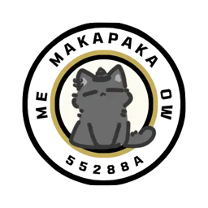

Scouting Cat Privacy Policy
The short version: the Scouting Cat apps have no accounts, and nothing about you leaves your device. The website works the same way unless you choose to sign in with Discord; then we keep your Discord user id, display name and avatar, plus the scouting data you save. No ads, no analytics, no tracking, and we never sell anything.
Scouting Cat is built by VEX Robotics Competition team 55288A (Makapaka). It shows V5RC rankings, events, match results and team statistics. This policy covers the Scouting Cat apps for iOS and Android and the Scouting Cat website.
Information we don't collect
You can use Scouting Cat without signing up or signing in. We do not collect:
- Your name, email address, phone number or any other contact details
- Your location, contacts, photos, camera or microphone
- Advertising identifiers, or any data used to track you across other apps and websites
- Analytics, usage statistics or crash reports
Information stored on your device
The app saves a few things locally so it works the way you left it:
- The teams you mark as favourites
- Your colour theme and number font choices
- Cached copies of rankings and app settings, so the app opens quickly and still works offline
This data never leaves your device and we can't see it. To remove it, delete the app. On the website, your theme choice is kept in your browser's local storage, and clearing your site data removes it.
Optional sign-in on the website
The website (not the apps) lets you sign in with Discord, so your scouting data follows you between devices and you can share it with your team. Signing in is optional; everything else works without it.
- It uses Discord's identify permission only, so we receive your Discord user id, display name and avatar. We do not receive your email address, your servers or your messages.
- Your scouting data (favourite teams and events, "my team", match notes and picklists) is saved to your account.
- Scouting groups: picklists and match notes you add to a group can be read and edited by everyone in it, and they see your name and avatar as a member and as the author of notes and changes. Anyone with a group's invite code can join; the group's owner can change the code.
- Votes on teams and events: totals are public; who voted which way is not shown to anyone.
- Signing in keeps a session token in your browser for 30 days. We store only a one-way hash of it.
Deleting your data: signed in, open the account menu and choose Delete my account. That permanently removes your account, synced data, votes and group memberships; groups you own pass to another member, or are deleted if you were the only one. Notes you wrote in a group stay with the group unless you delete them first. Signing out alone keeps your account.
Network requests
To show current results, the app downloads public competition data from our server, which runs on Cloudflare. Those requests contain only what's needed to fetch the page you're viewing, such as a team number or event ID. They don't include any identifier tied to you.
Like any internet service, Cloudflare receives your device's IP address and basic request details when you connect, and may keep them briefly in standard server logs for security and reliability. We don't use this information to identify you, and we don't combine it with other data. See Cloudflare's privacy policy for details.
Competition data
Team numbers, team names, organisations, locations, match results and awards shown in Scouting Cat come from the official VEX Robotics events service (events.vex.com) and are already public. Scouting Cat is an independent project and isn't affiliated with or endorsed by the REC Foundation or VEX Robotics. If information about your team looks wrong, it needs to be corrected in the official records, and Scouting Cat will pick up the change.
Sharing and selling
We don't sell, rent or share personal information with anyone. Discord handles sign-in when you choose it. Livestreams on event pages play through YouTube's player, which loads only when you open a livestream.
Children
Many VEX competitors are students. Scouting Cat is suitable for all ages. The apps collect no personal information, and the website's optional sign-in collects only what Discord's identify permission provides.
Links to other sites
Some screens link to official team and event pages on events.vex.com. Those sites have their own privacy policies, which apply once you leave Scouting Cat.
Changes to this policy
If Scouting Cat's data practices change, we'll update this page and its effective date before the change takes effect.
Contact
If you have questions about this policy, contact team 55288A at CONTACT_EMAIL.